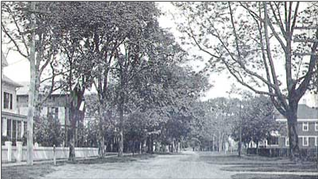
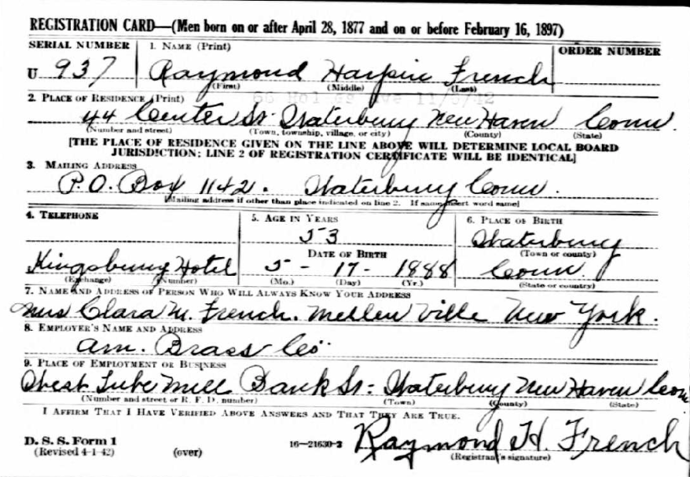

This page was updated by Mara French on 6/29/20.
Numbers in brackets [ ] show sources and refer to the
bibliography at the end of this chart. An asterisk (*) shows continuation of
that line. Send corrections or comments to Contact. Although this
is not my line, I keep it updated as time permits. Revisions: 1984, 2008, 2009,
2011, 2020.
Links
FFA Home Page
Chart 11 in pdf Format
Researched
and handwritten by Harry
Dana French
before 1960, then formatted in pdf by Art Westneat
Birth
Town Codes Abbreviations
Explanation
of a Lineage List
Index (French and related surnames)
Index (surname French only)
Earlier
Version
Chart
11 on Rootsweb (over 1,000 Frenches)
Compiled by Bill
French
Randy Keith Winch, the creator of the Rootsweb indexer for Ancestry.com and for WorldConnect
died on 8 Dec 2016; he was only 54. See
his Obituary below. Rootsweb has been taken
over by another person.
Bill
French has been trying to find someone to take over this line since 2018. He desperately
wants to get all his genealogical materials he collected from many of the
family members including extended family to our archive facility at the
Onondaga Historical Association, in Syracuse, NY. If anyone would like to
continue with this line on Rootsweb, please contact Bill
French.
Ancestors
and Descendants of Samuel French, The Joiner, of Stratford, Connecticut, by
Mansfield Joseph French, Published on 9 May 1941
If the above file does not open, try “Ancestors and
Descendants of Samuel French”. In my opinion,
this is the best documented ancestry on any French immigrant in America, plus
this version is searchable, 485 pages, includes photos, maps, full index. Just
click the page, and the next page will open.
PDF version: “Ancestors and
Descendants of Samuel French”.
TXT version: “Ancestors and
Descendants of Samuel French”.
Ancestry.com version: “Ancestors and
Descendants of Samuel French”.
History and Research
DNA
Test for Chart #11 – DNA Test Group 2
Jeremiah
French Jr.’s House in Upper Canada Village, Ontario, Canada
Jeremiah
French Jr’s House in Manchester, VT
Jeremiah
French Jr’s Tombstone, United Empire Loyalists’ Association of Canada
Historical
Narratives of Early Canada of Jeremiah French
Joshua French’s House in Manchester, VT
Stratford, CT Vital Records
1639-1854
Ripton Parish, Connecticut, Peter Price French, b. 15 Oct
1762
Jeremiah
French, Elizabeth Horsey, Samuel French, Susannah Pitman
The
History of the Old Town of Stratford and the City, p. 1204
1790 U.S. Census
Lieutenant Jeremiah
French Jr.’s Uniform
This 1779 uniform belongs to Lieutenant Jeremiah
French Jr. and is in the “Canadian War Museum”. Born in 1743, in
Stratford, Connecticut. Died in Cornwall, Ontario, in 1820. He
fought with Sir John Burgoyne and was taken prisoner at the Battle of
Bennington in 1777. After the war he received a 2,400 acres Loyalist
grant at Maple Grove, near Cornwall, Ontario. His home is now in “Upper
Canada Village”, Morrisburg, Ontario. Research
supplied by Ian Blundy [15].
Other Men
Named Jeremiah French
Suffolk
Wills
Will of Thomas French, 29
September 1653, Knodishall, Suffolk, England
Will of Edmond French of Kelsdale, 10 Jun 1619
St.
John the Baptist Church, Saxmundham, Suffolk, England
Randall Keith Winch --
Obituary
FFA Library
You may search the FFA Library for “Chart
#11” or for “the Joiner” or “Lowestoft” to find more
information on this line.
Bibliography
History and Research
Contact Information: Please send Bill
French any corrections or additions to this chart. He has a
published genealogy citing my oldest ancestor is William French b. 1450, d. ca.
1520. His genealogy was published by his great uncle, Mansfield Joseph French
in 1940 and is entitled, "Ancestors and Descendants of Samuel French The
Joiner of Stratford, Connecticut", Edwards Brothers, Ann Arbor, Michigan).
Bill French's line is as follows: William (Bill) French > Alexander Winchell
French > Arthur Huntley French > Mansfield Joshua French > Rev.
Mansfield French > Joshua French > Samuel4 > Samuel3 > Samuel2 (The
Joiner) > Samuel1 > Rev Jeremiah > Thomas > Robert (Robard) > Thomas > William > William of Lowestoft (1450-1520).
This French line lived all over the U.S. and Canada,
but mostly in Connecticut, Iowa, Michigan, New Jersey, Jew York, Ohio,
Pennsylvania, South Dakota, Vermont, and Wisconsin. In Canada they lived in
Ontario, Oxford, Stormont, Cornwall, and Saskatchewan.
Chart #11 is named after the first immigrant of this
line to come to America, Samuel French, the
Joiner. A joiner was a profession in the 1600's, and according to Webster,
it is a person who constructs the wooden components of a building, such as
stairs, doors, and door and window frames.
Chart #11 goes back to 1450, the oldest research we
have on the surname French. William French was born about 1450 in Lowestoft, died about 1520, and was buried 7 Feb 1560 in Kelsale, Suffolk County, England. William French was a Lowestoft merchant. Mansfield French states* that William
had two younger brothers (or one brother and a nephew), one of who was
Churchwarden of St. Mary's, Kelsale but church
records clearly show that the Churchwarden was Robert French, born 1545 to
Thomas, William's brother or nephew. Mansfield further states that William's
father was born c.1450 and died c.1520, and that his will is filed in Somerset
House, London. A researcher' 1993 visit to Somerset House revealed that no
wills are stored there, nor did a close search of the Public Records Office,
where such records are indeed kept, produce any such document (although I did
locate the will of another William French d.1535, apparently a collateral
relative). For William's father to have lived 1450-1520, he would have to have
been at least 50 when he married and to have survived her son, William's mother
would have to have been in her 90's in 1593 and therefore young enough to be
her husband's granddaughter [3].
It seems more likely that, as both William's wife
Christian and his sister Margaret had grandchildren (and were thus probably at
least 40), his godson William Wright was married, and his mother was still
living when he died, William was probably born between 1520-1540. If this is
so, William's father would probably have been born between 1480-1520 and thus
is clearly not the William French, Mansfield suggests and the John (d.1561) and
Thomas (d. 1567) whom Mansfield lists as William's brothers could instead have
been his uncles. Mansfield lists a Margaret, bapt.
1548, as one of Thomas's children. William's will names
his sister, Margaret, who would have been born about this time. Could Thomas be
William's father? [3]
In any case, William and Christian apparently had no
living issue. He thus left much of his estate, a good portion of which he owned
outright (rather than leasehold) to his sister Margaret's son Thomas Goddard
and to his wife's son by her first marriage, Matthew Fullwood
who himself had a young daughter at the time of William's death. William's
mother Agnes, who had been widowed for a second time just previously, survived
her son [3].
He was clearly interested in education, as he also directed
that Christian "bring up or cause to be brought up" Richard Mighael [sic], a fatherless minor, and send him to school
so that he might learn his grammar "and other things necessary," and
like his late stepfather provided an income for a schoolmaster. He also
provided for housing "for two poor people to dwell in so long as the world
standeth" and extended his late stepfather's
bequest to the poor [3].
* Mansfield states that his records were
"furnished by Richard Grosvenor Barteiot FSA,
Editor Somerset & Dorset Notes & Queries." This would have been
before 1940 [3].
Samuel French, the Joiner, was born 15 May 1687 in
Bradford Abbas, Dorsetshire, England, died 3 Sep 1763 in Stratford, Fairfield
Co., CT, and married Mary Price in Dorset. They had 11 children: Samuel,
Jeremiah, Mary, Susanna, John, Jonathan, Anne, Elizabeth, Thomas, Hannah, and
Joseph, all of which are documented in Chart #11.

East Broad Street, Stratford, CT
Jeremiah French was born ca.1712, the son of Samuel
and Mary (Price) French of Stratford, Ct. He came to Dover by 1756 and leased
two large farms totaling over 400 acres. He lived near Old Dover's Tavern in
South Dover. He was an original purchaser of some of the New Hampshire Grants
and before the Revolution owned much of what is today Manchester Center, VT. He
had 4 sons who were loyalists; Jeremiah Jr., Benjamin, Charity and Gershom [9].
Considering the very detailed "Settlers of the
Beekman Patents", in Dover, Dutchess County, NY
it's confusing because there were two Jeremiah Frenches. Jeremiah French Sr was
the 2nd son of Samuel French The Joiner. He moved from CT to Dutchess County, NY. He was often accused of being a
Loyalist, and after some skirmishes with some of the locals, and having to
escape for awhile to Long Island, he finally
prevailed in Court and retained all his lands in Dutchess
County, NY.
About 1760, his son and others formed a group called
the Nine Partners - a land developing company. They purchased the original
patents the King gave about 61 of his buddies, and subdivided and sold them.
Jeremiah Jr. surveyed much of the town of Manchester, Bennington County, VT,
and was the first Town Clerk. He eventually moved to Manchester.
Jeremiah French Jr, was a Loyalist and a Captain in
the Queens Loyal Rangers, then later a Lt. in the Royal Regiment of New York,
(called the "Yorkers"). He forfeited much of his lands in VT. He
moved to Cornwall in Ontario where he became a very prominent citizen and was
the area's first representative to Parliament in Ottawa. His house was actually
moved from land now submerged to make way for the 1950's St. Lawrence Seaway
Project enabling freighters to travel into Lake Ontario from the Atlantic
Ocean. He sold his original house to a son-in-law, George Robertson. That house
is still standing at Upper
Canada Villages,
near Cornwall, Ontario, Canada. The house is called the "Robertson
House”. Prior
to this house, Jeremiah lived at the 1811
House in
Manchester Village, Vermont.
What is a Joyner or Joiner?
This interesting surname is of Old French origin, and is from
an occupational name for a maker of wooden furniture, derived from the
Anglo-Norman French "joignour", from the
Old French "joigneor", itself from "joinre", to join, connect, originally from the Latin
"iungere". As an occupative
term joiner probably came into use somewhat later than carpenter. Job
descriptive surnames originally denoted the actual occupation of the namebearer and later became hereditary. The medieval "Cocke Lorelle's Bote"
mentions "Carpenters, coupers, and joyners". The surname was first recorded in the late
12th Century (see below), and other early recordings include: William le Juinnur (1204, Early English Personal Names); and John le Jeynuur in the 1296 Feet of Fines of Essex. Recordings from
London Church Registers include the christening of Francis, son of Anthony
Joyner, on July 18th 1591 at St. Margaret Lothbury,
and the marriage of Christofer Joyner and Agnes Savadge on December 4th 1598. The first recorded spelling
of the family name is shown to be that of John Joinur,
which was dated 1195 - 1215, in the "Records of Pleas of London",
during the reign of King Richard 1, known as "The Lionheart", 1189 -
1199. Surnames became necessary when governments introduced personal taxation.
In England this was known as Poll Tax. Throughout the centuries, surnames in
every country have continued to "develop" often leading to
astonishing variants of the original spelling.
Read more: http://www.surnamedb.com/Surname/Joyner#ixzz1uUbvteFi
Stratford,
CT Vital Records 1639-1854
From the Barbour Collection
Surname French, website: http://www.rays-place.com/town/stratford-ct/stratford.htm
Andrew, son Samuell Jr
& Elizabeth, b Mar 24, 1755
Benjamin, son Jeremiah & Hannah, b Oct 22, 1745
Benjamin, son Benoni & Mehetable,
b June 2, 1772; died June 23, 1772
Benoni, m Mehetable BOOTH,
Jan 11, 1763
Bette, dau Jon & Bette, b Sept 13, 1744
Bette, dau Jon & Bette, b June 8, 1752
Bettee, dau
Samuell & Hannah, b Apr 16, 1770
Bette, dau Gameliel & Susan, b Aug 24, 1784
Charity, dau Jeremiah &
Hannah, b Aug 15, 1747
Elijah, son Samuell Jr
& Elizabeth, b Sept 12, 1751
Elisha, son Jon & Bette, b Dec 19, 1750
Elizabeth, dau Samuell Jr & Elizabeth, b Apr 8, 1741
Frederick, of Monore (sic),
m Carline WELLS of Stratford, Nov 29, 1843, by Rev W B Weed
Gamaliel, m Susana ______.
Gameliel, b Apr 13, 1755
Hulda, dau
John & Bette, b Sept 28, 1743
Ichabod, son James & Mary, b Jan 13, 1777
James, m Mary BRINSMADE, Jan 19, 1774
Jeremiah, son Jeremiah & Hannah, b July 8, 1743
John, son John & Bette, b Dec 23, 1746
John, son James & Mary, b Aug 28, 1775
Joseph, son Samuell Jr
& Elizabeth, b July 26, 1748
Joseph Brinsmade, son James
& Mary, b Jan 12, 1786
Joshuah, son Samuell & Hannah, b Feb 20, 1767
Josiah, son Samuell Jr & Elizabeth, b Dec 18, 1745
Mary, dau Jeremiah &
Hannah, b Feb 28, 1739
Mary, m Daniel SHELTON, Mar 13, 1758
Mare, dau Benoni & Mehetable, b Dec 7, 1766
Nathan, son Jon & Bette, b Dec 26, 1748
Nehemiah Loring, son Samuell
Jr & Elizabeth, b May 1, 1737
Polly, dau James & Mary,
b Dec 6, 1778
Rebecca, m David SHERMAN, Jan 18, 1775
Ruth, dau Gamaliel &
Susan, b Aug 21, 1786
Samuell Jr, m wid.
Elizabeth CLARK, June 2, 1736
Samuel,
son Samuell Jr &
Elizabeth, b Mar 9, 1738/39
Samuel Jr, m Hannah NICHOLS, May 29, 1766
Sarah, dau Jeremiah &
Hannah, b May 22, 1741
Sarah, dau Samuell Jr & Elizabeth, b June 22, 1743
Sarah, dau John, sadler, & Hannah, b Sept 24, 1753
Sarah Redfield, dau James
& Mary, b Aug 13, 1783
Susana, wife Gamaliel, b Sept 18, 1760
Timothy, son Gamaliel & Susan, b Sept 12, 1788
William, son Jeremiah & Hannah, b Mar 23, 1737
William, son Gamaliel & Susan, b Dec 18, 1782
1790 U.S.
Census
It might be interesting to know that in the 1790
census of the United States, only 488 head of households are named French, and
no other family is listed as from Northumberland; therefore, we conclude that
Jeremiah’s father died before 1790. He must have been about 50 years old, born
about 1740.
Those head of households listed for New York in 1790 are:
William French, Harpersfield,
Montgomery Co., New York
Samuel French, Mohawk, Montgomery Co., New York
Peter French, Plattsburgh, Clinton Co., New York
Peter French, Hampton, Washington Co., New York (FFA Chart #11)
Peter French, Rensselaerwick, Albany Co., New York
Ruben French, Plattsburgh, Clinton Co., New York
Levi French, Wellsburgh, Clinton Co., New York
Jonathan French, Argyle, Washington Co., New York (he is from FFA Chart #6)
Joseph French, Mohawk, Montgomery Co., New York
Joseph French, Washington, Dutchess Co., New York
Joseph French, Hudson, Columbia Co., New York
Joseph French, Oyster Bay, Queens Co., New York
Joseph French, Middletown, Ulster Co., New York
John French, Otsego, Montgomery Co., New York
John French, Harpersfield, Montgomery Co., New York
John French, Rensselaerwick, Albany Co., New York
John French, Saratoga, Albany Co., New York
John French, Hoosick, Albany Co., New York (FFA Chart #11)
Jasper French, Whites, Montgomery Co., New York
Jeremiah French, Pawling, Dutchess Co., New York (FFA
Chart #11)
Elijah French, Balls Town, Albany Co., New York
Benjamin French, Saratoga, Albany Co., New York
Benjamin French Jr., Saratoga, Albany Co., New York
David French Jr., Otsego, Montgomery Co., New York
David French Sr., Otsego, Montgomery Co., New York
David French, Cambridge, Albany Co., New York
Ebenezer French, Mohawk, Montgomery Co., New York
Abner French, Mohawk, Montgomery Co., New York
Ansil French, Rensselaerwick,
Albany Co., New York
Ashel French, Mohawk, Montgomery, New York
Those head of households listed for Pennsylvania in 1790 are below.
Alexander French, Hopewell, Newton, Tyborn, and Westpensboro,
Cumberland Co., Pennsylvania
Alexander French, Springhill, Fayette, Pennsylvania
Andrew French, Bristol, Philadelphia, Pennsylvania
Aron French, Washington, Pennsylvania
Charles French, Water Street East Side, Philadelphia, Pennsylvania
Chrisr French, Water Street East Side, Philadelphia,
Pennsylvania
Daniel French, Bedford, Pennsylvania
Danl French, Mixed township, York Co., Pennsylvania
Enoch French, Fannet, Hamilton, Letterkenney,
Montgomery, and Peters, Franklin Co., Pennsylvania
Eres French, Armstsrong, Washington, Pennsylvania
James French, Bedford, Pennsylvania
Jeremiah French, Northumberland, Pennsylvania (FFA Chart #179)
John French, Bedford, Pennsylvania
John French, Northern Liberties, Philadelphia, Pennsylvania
Jonathan French, Water Street East Side, Philadelphia, Pennsylvania
Jno French, Portion taken from Washington, Allegheny,
Pennsylvania
Robt French, Portion Taken from Washington, Allegheny Co., Pennsylvania
Samuel French, Fannet, Hamilton, Letterkenney,
Montgomery, and Peters, Franklin Co., Pennsylvania
Wm French, Hopewell, Newton, Tyborn, and Westpensboro, Cumberland, Pennsylvania
Wm French, Portion taken from Washington, Allegheny Co., Pennsylvania
Wm French, Portion taken from Washington, Allegheny Co., Pennsylvania
Lieutenant Jeremiah French Jr.’s
Uniform
This 1779 uniform
belongs to Lieutenant Jeremiah French Jr. and is in the “Canadian War Museum”.
Born in 1743, in Stratford, Connecticut. Died in Cornwall, Ontario, in
1820. He fought with Sir John Burgoyne and was taken prisoner at the
Battle of Bennington in 1777. After the war he received a 2,400 acres
Loyalist grant at Maple Grove, near Cornwall, Ontario. His home is now in
"Upper Canada Village", Morrisburg,
Ontario. Research supplied by Ian Blundy [14].

Will of Thomas French, 29 September 1653, Knodishall, Suffolk, England
Comments by Jeanette French, jfrench1@earthlink.net, email good in
2004.
This Thomas French is a different Thomas French than identified
in "Ancestors and Descendants of Samuel French the Joiner of
Stratford,
Connecticut" by Mansfield Joseph French; Syracuse, New York,
1940. However,
he presents a transcription/abstraction of the will of Rev.
Jeremiah French,
in the County of Dorsett, 12 May 1685, which states "
Moreover my will is
that he shold pay my sister Hanah in Suffulke the three
pounds a year
(injoyned me by my father on his will)
during her life. . . ." Since this
is found in the following Thomas French's will, there is little
doubt that
this Thomas French is the father of Rev. Jeremiah French.
"In the Name of God Amen
the nine and twentith day of September
in the yeare of our Lord one thousand
six hundred fifty three I Thomas French
of Knodishall in the County of
Suffolke gentleman being in perfect health and good
remembrance doe ordain
and make this my last will and testament in manner and form
following.
"Item I give and bequeth unto Nathaniell my youngest sonne one
little
tenement called
Nic??boned together with the yards
orchards and Tightle there unto belonging
lying in Knoddshall aforesaid now in the
occupation of Samuell French his
Brother to to have and to hould the said tenement with the yards
orchard and
tightell before bequeathed unto the said Nathaniell my sonne to him and
his
heirs forever from and after the death of Lucie my wife"
"Item I give and bequeth unto John
my sonne all that my coppyhold
or
customary lands lying in a close called the (?Slay
or Slone)close in
Knoddishall aforesayd the whole
Land Robert French my father bought and had
of the Surrender of one Robert Fletcher of (?firston) in the Countie
aforsaid to have and to hold to the said John my sonne and his heires
forever from and after my decease
"Item I give unto Jerimy French my sonne one close called Broadsenn
with
three Tightells lying att the westende of the close in Knoddshall aforesaid
and one close called (?Cordecalls)
lying in four peices and one little
meadowe called the long meadow lying in Buxlowes in the Countie aforesaid
to
houlde to him the said Jeremy his heires and assignes forever he
the said
Jeremiah paying unto Phillipp my sonne the summe of three (?score) pounds of
lawfull english money
within foure years next after my decease the first
payment to beginn within one yeare next after my decease and if my said
sonne Jeremie shall faile in paying of the sayd three
(?score) pounds I give
my sayde sonne
Phillipp as aforesaid then I give and bequeth the same Land
unto my seconde sonne
Phillip and his heires Seconde
"Item I give and bequeath unto the said Jeremye
my sonne all the rest of my
Land and tenemente with the
appurtenances whatsoever or wheresoever both
freehold lands and tenements or coppyhold
and Customary Land and tenements
lying in Knoddishall or Buxlowes or elsewhere and not formerly given in this
my last will and testement to have and
to hould from and after my Decease
unto the said Jereme my sonne and to his heire forever nonethless upon
_______ ________ at ones following (viz) that so the said Jerimie my sonne
his heires Executor or Adminestratores doe pay or cause to be payde
such
summe and summes of money
as he hath formerly entered into Bond to pay unto
Abigall my daughter Samuell
my sonne and Nathaniell my sonne
"and also that he his Executors or
Administrators shall pay or cause to be
payede unto Hannah Wilson my daughter the summe of three pounds of lawfull
money of England yearely and every yeare during her naturale life
and if my
said sonne Jeremie
his Executores or Administrat
shall refuse to pay the
said summes of mony
formerly expressed that then I will my queath to him
shall be utterly voide and of none
effect
"And then I give and bequeath all those Lands and tenements
herein this my
will given unto Jeremie
my sonne unto Philipp my sonne
and to his heires
forever he paying all such summe and summes of money as Jerimies sonnes
should have done.
"Item I give unto Nathaniell my sonne the great bedd in the now parlour as
it standeth with all that belongeth unto it and two payre
of sheetes;
"Item I give unto Hannah Wilson my daughter the trundle bedd in the now
Parlour with all that belonges
unto it and two payre of sheetes;
"Item I give unto Robert French my sonne
the summe of twenty shillings to be
payd unto him by my Executors within one yeare next after my demease
"Item I give unto Mary Webb my daughter the summe of twenty shillings to be
paide unto her within one year next after my demise
"Item I give and bequeath unto Abigale now the wife of Samuell the summe of
tenne shillings of lawfull
English money to be paid by m y Executores within
six monthes next after my demise all the
rest of my goods chattells and
moveable _____ bequeathes I give and
bequeath unto Phillip French my sonne
whom I make and ordaine solo Executor of
this my last will and testement in
witnesse of which I have hereunto _______ my name and
______ to my seale the
day and yeare fixst
above written Thomas French Publishes __________ and
________ in the presence of Thomas Knight William L___ugman
"This will was proved at Westminster
the fourth day of February in the yeare
of our Lord God (according to the computation of the Church of the
Church of
England) one thousand six hundred fifty and three before the
Judges for
probate of Wills and granting administration __ lawfully
authorized by the
oath of Phillipp French his natural and lawfull sonne and Executor named
in
the said will to whome administration
was committed of all and singular the
goods chattells and debts of the said condicile having first sworn truly and
faithfully to administer."
Summary:
Father: Robert French
Wife: Lucie
Sons: Nathaniell, Robert, Samuell, John, Jerimy, Phillip
Daughters; Hannah Wilson, Mary Webb, Abigall
Others: Abigale now the wife of son Samuell
Robert Fletcher who his father bought land from
Witnesses: Thomas Knight, William L___ugman
Coppyhold = a conveyable lease of land
=======================================
On 5 Nov 1645 the County of Suffolk divided into 14
precincts for Classical Prebetyries. In the 4th
division were: Thomas French of Knoddishall and
William French of Kellishall or Kelshall.
Thomas French also shows up in Kelshall and paid for
his lands by 1641, and Robert French of Keddington
[8]. Daniel French was a minister of Stroud from 1657-58. On 7 Jun 1644 in Cottenham (Cambridge), sequestered from Dr. John Manby to Peter French. Robert French is of Keddington on 19 Apr 1647.
Will of Edmond French of Kelsdale,
10 Jun 1619
Edmond French of Kelsdale.
Yeo. 10 Jun 1619. Sick. Soul to Almighty God, trusting to have remission of
sins & be saved by merits, death & passion of Jesus Christ. To wife
Cicely, for life, all lands & tenements in Kelsale
& Carlton, she paying out of the same to son Thomas French £13. 6s. 8d. at
Lady day & Michaelmas by equal portions a year;
if she fail in payment, then Thomas to enter lands
& distrain till he be paid. On her death, said lands to go to son Thomas,
he paying out of the same £200, namely to his sisters Cicely & Margery
French £50 each in 1 year of their mother’s death, & to pay to brother
William & sister Dorothy £50 each in 2 years. If he refuse
payments, then power to Cicely, Margery, William & Dorothy to enter lands
which testator’s father Thomas French bought from Dionise
Norman, & sell the same, & that any of them whose portion be unpaid
shall make sale thereof, & the money thus arising to be equally divided
between them. Also to wife Cicely, all goods, cattle
bonds, bills, plate & ready money; she to pay daughter Clemence French £50
in 3 years of testator’s death & to pay son Francis French £70 in 2 years
& to pay son William French £20 when he be 22. If any of these children die
before receipt of legacy, surviving children to inherit that portion. Wife
Cicely to be extrix. Wit. Robert Reeve. William Davenford. John Block. Pr. Granted to extrix
at Kelsale, 24 Nov 1620.
Randall Keith Winch -- Obituary
WINCH, Randall Keith, age 54 (Nov. 20, 1962 – Dec.
8, 2016) died on Thursday, Dec. 8, 2016, at his residence in Winchester. Randy
was born on Nov. 20, 1962, in Ord, Calif. to Roger and Carolyn Winch. He is
survived by his father, Roger Winch of Winchester; one sister, Nicole Collins
of Tullahoma; one brother, Kevin Winch of Winchester; and his nieces, Vanessa
Morris of Franklin County and Nicole "Nikki", Victoria and Rachael of
Tullahoma. His mother, Carolyn Proffitt-Winch preceded him in death. Randy was
a long-time resident of Tullahoma and Winchester. He graduated from Tullahoma
High School in 1981, where as a student he excelled on both the math and tennis
teams. Randy loved playing tennis in his younger years and taught himself how
to code. He started Rootsweb in 1996, and was fondly
referred to as the "Chief Hacker and Creator of Wonderful Things" by
Brian Wolf Leverich. In 2000, Rootswed
was purchased by Ancestry and Randy stayed on until his death as the senior
software developer for Ancestry.com. He was
instrumental in building, improving and maintaining Rootsweb
and his love for his mother Carolyn led him to also develop WorldConnect.
Randy will be fondly remembered both by his family and everyone who had the
honor of calling him friend and will be missed beyond measure. In lieu of
flowers, please send all donations in his name directly to Tullahoma High
School, 927 North Jackson St., Tullahoma, TN 37388, Attn: Ladonna Webb, to
either the THS Tennis and/or THS Computer Technology (CTE). Visitation was held
on Thursday, Dec. 15, 2016, at Kilgore Funeral Home in Tullahoma from 4 to 7
p.m. Kilgore Funeral Home in charge of arrangements, 215 Mitchell Blvd.,
Tullahoma, TN 37388 (931) 455-0677 kilgorefh@lighttube.net. Published in Herald Chronicle on Dec. 16, 2016
- See more at: http://www.legacy.com/obituaries/heraldchronicle/obituary.aspx?pid=183084525#sthash.ZiSuteiX.dpuf
Bibliography
[1] Al Dawson, at788@detroit.freenet.org
(from 1998 – no longer valid). The maternal grandmother of my ancestor (wife of
Milton Arthur Mason) of Jane (Jennie) SPRINGER Mason (1844-1895) d. Akron, OH. Anthy French b. 1780, Manchester VT. Parents: Joseph French
(1748-1813); married 1777 Mary BEARDSLEE, in Stratford, Fairfield County, CT.
Mary's date are (1758-1839) b. Stratford, CT, died Manchester VT. She too has a
French (surname) background, as her father was Israel Beardslee
and her mother was Elizabeth French. Joseph was the
son of Samuel French b. 1710 in England and Elizabeth Loring. From Ref [2], p
46 (according to notes from my Springer cousin Jane Ellen Jackson, of Houston,
Texas.
[2] "Ancestors and
Descendants of Samuel French, The Joiner of Stratford, Connecticut"
by Mansfield Joseph French. You may purchase book through HIGGINSON BOOK
COMPANY
148 WASHINGTON ST
SALEM, MA 01970
Assistant: LAUREN
978-745-7170
fax: 978-745-8025
www.higginsonbooks.com
Search this book on ancestry.com: https://www.ancestry.com/search/collections/11818/
[3] Bill French, wcfrench@hal-pc.org,
continuing research by his great uncle, Mansfield Joseph French Ref [2]. Bill French has been trying to find someone to take
over this line since 2018. He desperately wants to get all my
genealogical materials I collected from many of the family members including
extended family to our archive facility at the Onondaga Historical Association,
in Syracuse, NY.
W. C. French
181 Parkside Ave
Orange Park, FL 32065-7214
Cell 832-723-1957 no land line
Spouse Carol E. French, cell: 281-989-3351, cfrench47@yahoo.com
William (Bill) French > Alexander Winchell French
> Arthur Huntley French > Mansfield Joshua French > Rev Mansfield
French > Joshua French > Samuel4 > Samuel3 > Samuel2 (The
Joiner) > Samuel1 > Rev Jeremiah > Thomas > Robert (Robard) > Thomas > William > William of Lowestoft (1450-1520)
FFL #11 and #131, Family Tree DNA #108/F07339. Also use email: santabill3@gmail.com,
good in 2020, and website: http://myownsanta.com.
My 3rd great grandfather, Rev. Mansfield French, was a Episcopal-Methodist minister who was engaged in securing
funding for many colleges and universities in this country, including Marietta
College and the first two black colleges, Xenia Female College and Wilburforce University which is still in existence as
a part of the Ohio State University System - and named for the famous British
abolitionist, William Wilburforce. After the
outbreak of the Civil Was he asked his good friend Salmon Chase, then
Secretary of the Treasury under Abraham Lincoln for an audience with President
Lincoln. He met with President Lincoln on several occasions extolling the
plight of the negroes in the south and the desperate need for assistance. On
January 6, 1862, Simon Cameron, Secretary of War, with the expressed approval
of President Lincoln appointed Rev Mansfield French a Chaplin in the US
Army and placed him in charge of administrating the Freedmen's Bureau in
Beaufort, SC. formed in February of 1862. This post was Rev. Mansfield French's
crowning achievement after a life already filled with service to his church and
to his fellow man, particularly in the promotion of higher education.
Another notable who would be Lt. Jeremiah French, a
Loyalist who was first a Captain in the Queens Loyal Rangers then a Lt. in the
King's Royal Regiment of New York, 'The Royal Yorkers'. After the Revolutionary
War he fled to Canada where he became the first Member of Parliament for the
Stormont area of Ontario. Two of his original houses still are being used - one
is now the Restaurant and bed and breakfast called the 1811 Houston, in
Manchester, VT, and the other now named The Robertson House in the Upper Canada
Villages, Maple Grove, near Cornwall, Canada - where it was moved in the 1950s
when the St. Lawrence Seaway was opened to commercial shipping. George
Robertson was his son-in-law who only owned the house for two years after the
death of his wife Elizabeth French Robertson, and before his own death.
Burton Lee French, 1875-1954
Biographical History
Born August 1, 1875 in Delphi, Indiana, Burton Lee
French was the fourth of nine children born to Charles Albert (or David Scott)
and Mina Philippena (Fisher) French. In 1880 the
family moved to Kearney, Nebraska where David Scott changed his name to Charles
Albert French. In 1882 the family continued the trek westward on the
"Immigrant Train" Railway to San Francisco, then by ship to Portland,
by riverboat and railway to Walla Walla where they paused for about a month
while seeking a permanent location. They then crossed the prairie in a wagon
and settled near Princeton, Idaho, but within a year the family moved to the
town of Palouse, Washington. In 1891 French was a member of the first
graduating class of the Palouse school, a school his father helped to build.
In January of 1893 Burton French entered the
University of Idaho. He interrupted his education to teach in the public
schools of Kendrick and Juliaetta, thus did not
graduate from the University until 1901. From 1901 to 1903 he was a fellow in
political science at the University of Chicago, graduating with a Ph.M. degree.
He was admitted to the Idaho bar in 1903. In 1921 he received an honorary LL.D from the University of Idaho; Miami University awarded
him the same degree in 1948.
In 1898, while still a student at the University of
Idaho, Burton French was elected to the Idaho House of Representatives, and was
re-elected in 1900, serving as Republican floor leader for his last two years.
While in Boise he met Winifred Estel Hartley, a teacher
originally from Nebraska. They were married in Norfolk, Nebraska, June 28,
1904. Their only child, a daughter, died in infancy.
In 1902 French was elected to the U.S. House of
Representatives, where he served as Congressman from Idaho from 1903 to 1909,
1911 to 1915, and 1917 to 1933. He was a member of the House Appropriations
Committee and served as chairman of the Sub-committee on Naval Appropriations.
In 1930 and 1931 he was Congressional Representative to the Interparliamentary
Union in London and Bucharest respectively.
Following his defeat by Compton I. White in the
Democratic landslide of 1932, French returned to Moscow, where his wife died in
February 1934. In September 1935 he accepted a teaching position at Miami
University, Oxford, Ohio. He continued teaching, eventually becoming head of
the political science department, until 1946.
Although French was a life-long Republican, soon
after his retirement Miami President Truman appointed him to the Loyalty Review
Board of which he became vice chairman. He served on this board until it was
reorganized in 1953.
Burton French died at the age of 79 of leukemia in
Mercy Hospital, Hamilton, Ohio on September 12, 1954. He was buried in Moscow,
Idaho on September 22.
Idaho
State Representative, 1898-1901; U.S. Representative, 1903-1909, 1911-1915,
1917-1933; prof. political science, Miami University, Oxford, Ohio, 1935-1946.
There were several notables in our family that did
not have our surname and they include, Julius Sterling Morton - Secretary of
Agriculture under President Grover Cleveland, and the 'Father of Arbor Day' and
his sons started Morton Salt Company; Marie Koerber
aka Marie Dressler who won the academy award for Best Actress in the 1930
movie, "Min and Bill" opposite Wallace Berry, and nominated again the
next year in the title role of "Emma".
[4] Onondaga Historical Association
Museum
and Research Center, 321 Montgomery St., Syracuse, NY 13202. (See MJ
French Collection #6762).
As written by Bill French: The OHA is online, but
their collections are still being digitized and they have yet to acquire a
server adequate to permit online access to the information and documents. I am
in the process of publishing my family's third edition. The previous 2nd
edition, a copy of which I have, was last published in Dec 1940 by my grand
uncle, Mansfield Joseph French. Mansfield left all his genealogical papers and
materials archived at the Onondaga Historical Association in Syracuse, NY. I
have been indexing and scanning the totality of the collection for the last 5
years. I still have some to do, but believe the end is finally in sight. The
original index consisted of a single line very briefly describing the contents
of the 6 boxes of documents and materials. I presently have more then 100 pages
of a detailed index and several thousand scans of the images of the materials.
We also found my grand uncle's original Book #1 with
many notes he made to update his publication, on eBay. Fortunately, that is
back in the family, purchased on eBay by a cousin in Athens, Greece. I have no
idea how it ended up on eBay, since everyone who knew him, knew how deeply he
cared about the family history and knew he archived his papers and notes.
I digitized my grand uncle's entire book and retyped
every page of it into a master database. The original publication contained
about 3,000 descendants. Presently I have more than 16,000. There are many who
would like to merge into our family, but I haven't seen sufficient support
documentation to permit some of them to become a part of the master file. I
truly wish I had the advantageous my grand uncle had where I could devote full
time to compiling the family history. I do spent most
days doing something toward preparing the 3rd edition which I hope to publish
and have available for purchase at the "Big One", in the summer of
2009, the first ever full French and allied families reunion where the majority
of my family resided originally - in Manchester, VT,
As my note enclosed in my previous email stated, I
hope to slightly modify our genealogy to resemble more of a family history than
a straight genealogical record. I hope to have the bulk of the actual
genealogical record attached to the book, on a DVD which will be sold with the
book and will contain as much of the source documentation as possible, along
with the images of the many documents my grand uncle kept and that I have
accumulated for the last several years. (Emailed from Bill French)
[5] Janice Lund, genhelp@worldnet.att.net
(old email address)
[6] Brian, Brian1956@aol.com.
[7] Richard Day, roday46@cox.net.
[8] Ernest Thompson, Moss Beach, CA, ethompsoniii@sbcglobal.net.
Robert French, probably born about 1550 and died in 1611 in the U.K. He lived
in Carlton on the north edge of Saxmundham.
(Suffolk). Wife was Alice Wilton. Their son was Thomas French, born 1574. The
descendants ended up in New York and Vermont in pre-revolutionary time.
[9] Marian Reeves, marrev@verizon.net,
email good in 2018, descendant of Christopher French, my family is from
Tunkhannock, Wyoming County, PA. She will turn over all her research to the
Wyoming County Historical Society in Tunkhannock, PA.
[10] Tommy French, tommyfrench@cox.net.
[11] Rechcigl, svu1@aol.com, email
undeliverable.
[12] Volume 1, Frank Doherty book "Settlers of the
Beekman Patent, Dutchess County, NY. Frank In the
books he puts together all the information he found in his research on the
families that settled in the Beekman Patent. The French family would be Volume
5 and The Brown Family in Volume 2 you might want to try to look at these books
for the complete rundown on both of these families.
The information on Jeremiah French is from page 491
The War-II. Benjamin Birdsall was a Colonel who served on Long Island but
removed to Dover in the Beakman Patent in March 1777
Birdsall requested permission from the committee of Dutchess County to settle on some farm that had been
vacated by a Tory. the committee suggested that he settle on the farms formerly
in possession of Archibald Campbell and Moses Northrup in Pawling. He seems to
have settled instead on the farm of Jeremiah French in Dover. As the letter
below indicates, he was rather upset that French could claim his land back and
he took on Egbert Benson, Chairman of the County committee in his Pique.
Birdsall placed the following notice in the New York
Journal and the General Advertiser issue of 15 March 1779.
Mr. Holt,
As I think it of importance that the good Whigs of
this State be well informed of the political character of the public officers
in government, insert the following narrative in your New-York Journal, and
will oblige your humble servant, Benjamin Birdsall.
Jeremiah French, of Dutchess
County, being suspected to be disaffected to the liberties of America, and
having encouraged his sons to join the enemy, was as I am credibly informed,
put on his parole, broke it, departed out of this State, was absent about maybe
two years, has lately returned, and pretends that he has not been with the
enemy, but has resided in some part of Connecticut, during the aforesaid time.
--- Since his return, the Commissioners for conspiracies, before whom he was
convened, had upon an opinion, that he had not gone over to the enemy,
dismissed him---During the Interval of his absence, the commissioner of
Sequestration seized and sold his personal estate, and leased his lands to me
as a refugee from Long-Island; he now claims the possession of his farms, which
he held on a least for life, from Robert Gilbert Livingston; on the 12th inst.
in conversation with Egbert Benson, Est.; Attorney-General of this State, one
of the Commissioners for conspiracies, and a member of the Assembly concerning
the political character of the said Jeremiah French, and his claim to the
aforesaid lands, he advised me to hire
the said lands of French, which advice occasioned some debate between him and
me, in the course of which he told me, That for two years past, the Whigs had
done the State more damage than the Tories. Conceiving that the aforesaid
expression might have unguardedly escaped from him, I determined to put it in
his power to recall them; I therefore this morning publicly asked him whether
he had not made use of those expressions, and demanded of him to recall them.
-- I therefore think it my duty thus to publish the transaction between him and
me, determine how fit he is to serve them to public office. Benjamin Birdsall,
Marc 14 1779
589 Chapter 10, The Revolutionary War-III. Jeremiah
French was born ca. 1712, the son of Samuel and Mary (Price) French of
Stratford, Ct. He came to Dover by 1756 and leased two large farms totaling
over 400 acres. He lived near Old Dover's Tavern in South Dover, He was an
original purchaser of some of the New Hampshire Grants and before the
Revolution owned much of what is today Manchester Center, VT. He had 4 sons who
were loyalists; Jeremiah Jr., Benjamin, Charity and Gershom, the book
"Ancestors and Descendants of Samuel French the Joiner" 1940, has
good information Jeremiah and his family but we have found a considerable
amount of local information about his Loyalists activities, some of which
follow.
On 23 November 1776 Benjamin Birdsall presented an
account of confiscated goods found on the farm, late Jeremiah French, by
Zebulon Seaman and John Conklin. The goods were mostly joiners’ tools and were
found hidden in the cellar, inside walls, etc. A letter dated Red Hook 13 Feb.
1781 to Coz Gilbert Livingston states" I am informed that J French has
sold his farm or farms & himself got in his old trouble again. Therefore I
think it behooves me to look out for myself for the back rents, I make it to
about 300 bushels wheat back rent due in May 1781." on 27 Nov. 1782 Robert
G Livingston in a letter, proposed Jeremiah French's farm for "my
son-in-law Mr. John Reade to go on it in the spring."
French, in a letter dated Woodbury (CT) Feb. 16th day
1781, addressed to "The Gentlemen Commissioners and authority of Dutchess County" explained his actions: The reason of
my leaving my habitation as I did was because I was threatened of my life in
highest degree and likewise I was ordered by the authority after taken to
Return home and be peaceable which I should
have been exceeding glad of but my house was soon beset with a guard and
I thought my life in danger. So I left my habitation the last day of January
and came to New Milford the next day to Woodbury and there remained to the
first day of this instant Feb/ and then I went to New Milford and returned the
six day of the month, the seventh day I went to Wilton, the 8th day I went to
Middlesex the 9th day I returned to Redden and there remained to the 12th
day).) the 13th day to North Stratford the 14th day to Ripon and the 15 day to
Woodbury to my son again where I now be, as witness my hand and seal."
(signed) Jeremiah French (N-YHS Colls). As we note elsewhere, Lt Col. Benjamin
Birdsall took over French's farm after he left, but did not enjoy peaceable
possession.
Jeremiah French was an overseer of the poor for a
number of years and was Pawling Precinct Supervisor in 1776. He is supposed to
have died on his farm in Dover in 1793.
Bottom of page 492 and top of 493 Settlers of the
Beekman patent, Chapter 9 The Revolutionary War II.
Benson replied in the paper of 22 March 1770
To the printer
"Sir You will through the channel of your paper,, inform Ben Birdsall, that he is so infamous and
contemptible, as scarcely to merit my notice. -- He has maliciously
misrepresented a conversation between us. --- that I made us of the words
contained in his advertisement, or
others similar to them is true; but it is equally true that they were spoken
with certain restrictions, and in connections with other words, which would
give them a sense and meaning very different from what was intended by his
publication, --- I forbear to enter into a further vindication of myself, and
recapitulate all that passed between us on Saturday last, or to mention the
cause of his resentment against me, least I should seem to hold up an idea,
that I conceived it possible for him to injure my reputation, However, I do not
consider Birdsall in this instance, more culpable than the person (whoever he may be) whom he employed to draw up his
advertisement; the former it not only a mere wretch devo! id of principle or
sentiment, the latter from the stile and manner of the piece appears to have
understanding, and, I do assert, has most shamefully prostituted his talents,
to the vile purposes of defamation; I am , your humble servant Egbert Benson.
Poughkeepsie, march 19, 1779
On 12 March 1779 Birdsall submitted a very lengthy
letter to the paper, somewhat toned down, and that was the end of the paper
war"
Ancient Document 10002 contains a "Den V
Fen" ejectment proceeding against Birdsall brought by Samuel Ward and
Jeremiah French in October 1779, Gilbert Livingston was attorney for French and
the lands were awarded to French on 12 October 1789. Birdsall was indicted 19
May 1789 for an assault and batter, probably
connected with this matter. (Minutes of Court of common Pleas, MF 127, DC
Clerk's Office).
Birdsall was very active in the war but he didn't
seem to find the peace in Dover that he removed there for.
All the above information under [12] is from Marion
Reeves [9].
[13] Stratford
Historical Society.
[14] Ian Blundy, blundyian@gmail.com,
email good in 2020.
[15] Marilyn Kulkarni, email mask1@comcast.net,
email good in 2019.
I just found the French family I have searched for
years. They were in the
Rochester NY area and were mislabeled as Trench instead of French.
Brighton NY 1850 US census
Harvey S. Trench 70
Rebecca Trench 44
Alfred G
33
Jane
24
Susan
14
Martin
11
Mary
9
Frances
7
Margaret
3
[16] Raymond Harpin French

[17] FRENCH formerly OF KNODDISHALL
HERBERT GREER FRENCH, of Cincinnati, Ohio, associated
with Procter and Gamble, soap manufacturers, from 1893, Treasurer 1903,
Vice-President from 1919, General Chm, Cincinnati Community Chest Campaign
1931, Director, University of Cincinnati, Tstte,
Cincinnati Art ...
[18] Carole Main, email: elan@mohavebr.com,
email good in 2009. I am trying to get a least 5 of the French/Robertson/Moss
family history printed. I am writing the Moss Family history and I found that
The Rev. Jeremiah French B: 1623 (son of Thomas and Marjery
French lived in Saxmundham, England) Jeremiah's son
Samuel French married Susanah in Dorset England. etc.
etc.
Our French family moved to the US in 1743. Most of
the English men came to America as members of the military and were given land
grants in Canada for their service. Others stayed in the US. My aunt has
compiled an awesome amount of information. The French family lived in Maple
Grove a very small village along the St. Lawrence River in Ontario,
Canada. Aunt Edith is 95 years old so I am trying to get this completed
quickly. In Canada the Frenches married Robertsons
(my grandmother was a Robertson who married a Moss) etc. etc. If you would be
interested in the early information, I would be happy to send it to you. It is
a huge undertaking but a computer surely is the magic touch. Most of the
research was done on hand-printed pages. (like 7pt) Our families
lived on the St. Lawrence River where the Seaway went through so most of the
homes are gone. You can see the area at www.thelostvillages.com.
Carole Main Moss, Bullhead City, AZ. My phone number is 928-704-4427.
[19] Todd and Nonda (Sutherland) Henshaw,
email: todd.henshaw@msn.com,
email good in 2010. My great grandmother was Alice Claricy
French!
[20] Deborah Todd, email: dwillard60@gmail.com,
email good in 2018, phone: 650-862-1051.
[21] Jeanette French, jfrench1@earthlink.net,
email good in 2004.
[22] Nannette McCormick, email: roo@twcny.rr.com, email
good in 2010.
I just came across your website today and wanted to
let you know how helpful this is going to be in my research. I only
recently started researching my family's genealogy. I am the fifth
great-granddaughter of Jeremiah French. I found my ancestors on Chart
011.
Here is my family line:
Jeremiah French/Elizabeth Wheeler - fifth great grandparents
Hannah French/Stephen Miller - fourth great grandparents
Jeremiah Miller/Josette Lagrow - third great
grandparents
William Miller/Mary Elizabeth Hall - second great grandparents
Eunice Miller/Riley Lee Johnson - great grandparents
Everett Riley Johnson Sr./Lillian Amelia McCargar -
grandparents
Everett Riley Johnson Jr./Nancy Jane Piper - parents
I am looking forward to perusing this website, what a great find!!
[23] Deanna French, email: deanna.french@gmail.com,
email good in 2010.
Hi! I recently started gathering together my family
history on my father's side and came across your website. I haven't read all of
your website, but you are a French and we must be somehow related, however
distantly. My Great Aunt Gertrude did the lion's share of the family history of
the French's side of the family who settled in East Smithfield, PA in the U.S.
In brief...
Samuel French had Joseph. Joseph French had Gideon.
Gideon had Gideon A. French. Gideon A. had Sylvanus French. Sylvanus had Luke,
Luke had Purl, Purl had Dean, who is my father. I don't know if any of this is
of interest to you, but if it is, please reply and I'll be happy to
provide any information that I know about the French's in East Smithfield and
Wellsboro, PA.
Looking forward to hearing from you regardless.
--
Ms. Deanna L. French
Home (301) 567-7174
Work (301) 780-2100 Ext. 2019
William French, b. ca. 1450
William French, b. ca. 1483
Thomas French, b. ca. 1513
Robert French, b. 1545
Thomas French, b. 1574
Jeremiah French, b. 1623
Samuel French, b. 15 May 1687
Joseph French, b. 1730
Gideon French, b. ca. 1757
Gideon French, b. 30 Sep 1801
Sylvanus French, b. 9 Jul 1840
[24] Lindsey Taylor, email: lindsey.taylor@att.net,
email good in 2011.
I retrieved your information from the French Family
Association Website. My Name is Lindsey Taylor I am a decendent
of Samuel The Joiner (Chart 11) through his son Jonathan French and His
daughter Anna French Gilbert. I have been working on trying to confirm
the connections from Anna all the way up to Samuel the Joiner’s father. I did
not if you would be able to help me at all?
I saw under the Library part of the website a lot of research you and others
have compiled. i was not sure if you would be willing
to share some of the information? Under the Library Catalog the
numbers would be:
F273 Connecticut
F005 Connecticut 13 pages
F553 Samuel French
Other possible ones would be:
F055 Thomas French
F534 Vital Statistics of Frenches
in various parts of Connecticut
F353 B. History of Stratford- Mainly Samuel French info
Any help would be greatly appreciated. Please feel free to email me or contact
me on my cell at 605-695-0797. I am usually up late and reside in the Mountain
Time zone.
[25] Steve & Vicki French, email: frenchmeone@windstream.net,
email good in 2011.
My name is Steven French. For year's my family didn't
know much about the French side of the family. My grandfather Lyle Victor
French born21 Sept 1895 in Tillsonburg Canada and died in 22 Nov 1955 in Benton
Wisconsin did not leave much information. We had info on his father and then
his father then it ended in Canada. Now that I am retired and have time
on my hand's I thought it was time to start looking. I joined Ancestry.com and was amazed at what I found. I know
that not everything is completely accurate but has to be pretty close. I think
father's to son's is right but some of the siblings on some of the older people
might be off on some that I have found. I found your web site and find it
very interesting. I don't know about all this DNA stuff and the cost I'm really
interested in just finding where my family comes from. From what I can tell I
would be in Chart#E11 because that person is in my tree. I was surprised to
find my family go across Canada then to Connecticut then back to England.
Back to 1513. My question I have lots of questions is this thing you have
something that I should be a part of. Is there someone with this tree already?
When you say everything has to be documented are you talking birth certificate.
And death certificate? It sounds like a lot of work. Can you give me a little
feedback on how things work and if you would be interested in having my side of
the family. Thanks for your time and hope to hear from
you.
My name is Steven French and I have been spending the
last several month's on Ancestry.com looking for my family that we knew
little about other than we are from Wisconsin and my grandfather came from
Canada then it ended. Now I found out we go across Canada to
Stratford Ct. And Samuel"The Joiner" Chart
11. Then back to William French B.1450-D.1520 in Lowestoft
England. Then I found your site and am interested in putting my tree in. But I
have questions. Do we put it in Chart11. What kind of
proof do I need on all the people. Do I need
papers on all the births and deaths of every one all the way back.
If you could send me a little info on this it would be great. What is this DNA
does it cost money? Are you interested in my family? Hope to hear from you
soon.
[26] R. J. Thoden, rjthoden@twcny.rr.com,
email good in 2012.
Seeking information about William FRENCH born about
1450 at Lowestoft, Suffolk, England. Have no
wife for him but
born to marriage were at least three sons - William abt
1476; John abt 1478 and Thomas abt
1480. If you have any
information on this family, would like to hear from you.
[27] Bob Peck, email: rwpeck@aol.com,
email good in 2012.
I am a descendent of Jeremiah French. Please give me
a call (714-832-4420) or write back.
I have often been in communication with Bill French (last three times tonight)
and I have been to Bradford Abbas....
[28] Tricia Galloway, email: tmgal@sbcglobal.net,
email good in 2014.
I am descended from Samuel’s son Joseph and his wife,
Charity Beardslee, and currently live in Trumbull,
CT, within 10 miles of the Ripton parish burial
ground in Huntington Ctr., Shelton (now). My husband and I went there
yesterday and put some flowers next to the headstones of Dr. Lewis French, and
Lucy French, the oldest ones of the French family that we could find in that
cemetery. ctgenweb.org shows that Joseph and Charity were
buried there, but apparently their headstones did not survive. I need to
contact the sexton and look at his records some time.
Where do you live? Are you in Canada, or
Vermont?
I am sorry that I was not looking at the French
family line, and finding the French Family Association back in (or before)
2009, when you had a big family reunion (according to the website—it was being
planned anyway). It would have been wonderful to attend it.
You have tremendously helpful and interesting
information and links on the French Family Association website, Mara! My
information is extremely limited by contrast—but I would be happy to be
connected with local CT descendants, and also to follow up on anything locally
in CT that you might want looked at in person, talking photos, etc.
My phone number is (203) 374-4132.
[29] Mark D. French, email: MarkFrench@Fairpoint.net,
email good in 2015.
Generation 12, Mark D. French, b. 1953
Mark D. French, b. 1953
Generation 11, John Harpin French, b.
1922
John Harpin French was born ca. 1922 and lived in Mellenville, NY
This means that John would be in the 1930 census
There it states that he was born ca. 1923 in CT
in 1930 they were living in Hartford at 266 Palm
St.
Both his and his wife’s parents were born in CT
Family members:
Raymond H. 41 father
Clara M. 44 mother – or should she be Edna White?
Eunice M. 14 dau
Ruth E. 12 dau
Paul 11 son
Jane E. 8 dau
John 7 son == your dad
Betty A. 5 dau
Generation 10, Raymond H. French, b.
1888
Raymond H. French was born in 1888
He was a Title Examiner for insurance in 1930, home
valued at $10,500
Clara was born in 1885, and because they had daughter
Eunice in 1916,
they must have married in 1915 or before.
In the 1910 census, Raymond was an orphan, age 22,
single
In the 1920 census Raymond was 31 living in Hartford,
married to Clara
with children Eunice, Ruth, and Paul.
In 1935 Raymond was living at 728 Cherokee, Des
Moines, Iowa as an Abstract Examiner
On his WWII Draft Registration Card, he shows he was
born on 17 May 1888 in Waterbury, CT.
He was 5’ 10 1/2”, weighed 163 lbs,
light complexion, gray hair, blue eyes
I assume Raymond died before 1942. Clara was born
Clara Painter on 14 Sep 1885 in CT
according to the 1900 census of Waterbury, New Haven,
CT. Her father was Solon Painter
born in CT and her mother was Henrietta Painter born
in NJ. Clara had siblings Edith,
Walter, Nina, and Veda. She last lived at 12565
Philmont, Columbia, NY, died in Nov 1973.
You were 20 — did you ever meet her?
In the 1900 census, Raymond was 11 years old and
should appear with his parents.
The 1890 census was destroyed by fire. Cannot find
Raymond in 1900.
In the 1880 census, there’s a Harpin French, age 50,
born 1830 in Orange, New Haven, CT,
married to Sarah, age 44, and they have children
Charles 22, Albert 12, Louisa 10, and
Lillian 5. They may have had Raymond in 1888 but
Sarah would have been 53???? Hardin
died on 20 Nov 1893 — Raymond was only 4 and his
mother died in 1895 when Raymond was 6
and that is why Raymond is difficult to find in 1900.
Harpin is buried at the Oak Grove Cemetery
with his wife Sarah E. and children Eugene and Eddie.
His name was actually Harpin Riggs
French, b. Jul 1829 in Seymour, New Haven, CT, son of
Warren French, his wife was
Sarah E. Brockett and they had 9 children. Eugene
(1874-1875 and Eddie 1876-1878)
died young. Sarah E. Brockett was born 27 Apr 1835,
d. 26 Feb 1895 — so you can see
that in the 1900 census, Raymond was an orphan at age
11. Raymond was born when
Sarah was 53.
Following the other children:
Charles Hiram French, born 1858 — he could have been
Raymond’s father?
Albert, born 1868
Louisa, born 1870
Eugene, born 1874, died 1897
Lillian, born 1875
Eddie, born 1876, died 1878
Raymond, born 1888 — could or could not be him.
Looking at the 1900 census:
Charles was born Aug 1857 in CT, was living in
Seymour, New Haven, CT, single
Generation 9, Charles Hiram French, b.
1858
In the 1870 census, Charles was 12, born ca.
1858 in CT, living in Seymour with Hiram 52, born 1818
Ellen 16 (born 1854), Charles H. (born 1858), and
Mary E. 11 (born 1859). His mother must have died.
Charles Hiram French, b. 1858, living in Seymour
in 1860 with parents Hiram 41 (1819) and Julia A. 40 (1820), and
siblings Ellen A. 6 (1854) and Mary E. 1 (1859). Mary was born 21 Feb 1859,
died Mary E. Warren at age 19 on 13 Apr 1878.
Charles H. French, b. 1858, living in Seymour
in 1870, age 12, living with father Hiram French 52, plus see
above.
Charles H. French, b. 1858, living in Seymour
in 1880, age 22, living with father Hermam
French, age 62, born 1818.
Charles H. French, b. 1857, living in Seymour
in 1900, age 42, living with his widowed sister Ellen A. Short, 45, born
1855.
Charles H. French, b. 1858, living in Seymour
in 1920, age 62, widowed, living with his sister Ellen, 64
Charles H. French, b. 1858, living in Seymour
in 1930, living with his sister Ellen, 75
Charles died 9 Nov 1937 in Ansonia, CT
Generation 8, Hiram French, b. 4 Nov
1817, d. 5 Dec 1884
He was age 32 in the 1850 census, the first census
that lists all members of the household.
Many family members were buried on Elm St. at
the Cemetery in Ansonia, New Haven, CT, where there are 614 interments:
Hiram French, b. 4 Nov 1817, d. 5 Dec 1884
Julia Ann French, wife of Hiram, born 20 Apr 1820,
died 25 Jan 1870 just before census.
Ellen A. French, b. 3 Dec 1853, d. 5 Feb 1934
Mary E. Warren, wife of W. I., born 21 Feb 1859, d.
13 Apr 1878
Samuel French, died 28 May 1862, age 72,
Judith Howe, wife of Samuel French, died 8 May 1852,
age 58, married Judith Howe 25 Dec 1817 in Derby.
Samuel Howe French, born 11 Nov 1822, d. 13 Dec 1910
James W. French, son of William & Phebe, d. 29
Jan 1850, age 15
Phoebe A. French, daughter of William & Phebe, d.
8 Mar 1848, age 4 months
Betsey Peet, widow of William J. French, died 13 Jan
1860
Hiram French in Derby in 1850, age 31, living
with the Hotchkiss family. (Eli, Susan, George)
Hiram French in Seymour in 1860 census,
married to Julia A., children Ellen A., Hiram, Mary
Hiram French in Seymour in 1870 census
living with dau. Ellen, son Charles, dau. Mary.
Hiram French in Seymour in 1880 census,
died 5 Dec 1884
Generation 7, William Johnson French,
b. 1786 in Huntington, Fairfield Co., CT
married Betsey Peet
Generation 6, James French, b.
1759 in Ripton Parish, Huntington, Fairfield
Co., CT,
married Anna Seeley
Generation 5, Joseph French, b.
1730 in Stratford, Fairfield, CT, married Charity Beardslee.
Generation 4, Samuel French, b.
1687 in Bradford Abbas, Dorset, England, m. Mary Price.
Generation 3, Samuel French, b.
1655 in South Perrott, Dorset, England, m. Susannah Pitman.
Generation 2, Jeremiah French, b.
1623 in Saxmundham, England, m. Elizabeth
Horsey.
Generation 1, Thomas French, b.
1574 in Saxmunham, England, m. Marjery Knight
[30] Megan Bounds, email: mbounds@ancestry.com or
mebounds@ancestry.com,
email good in 2016. Lives in SF, CA. Additions on her website still need to be
added: http://www.ancestry.com/genealogy/
In order to access this website, we need your birth year.
[31] Rebecca B. Guenther, email: rguenther@pfclaw.com,
email good in 2017.
I'm trying to get in touch with Mr. French regarding
Chart #11 (Samuel French the Joiner of Stratford, CT) as I have some
interesting info to share and a couple of questions about Thomas French of
Manchester, VT and his sons who moved to Williston, Vt.
[32] Master Jonathan A. French, email: masterfrench@amaww.com,
email good in 2017.
[33] A History of the Town of Stratford and the City of
Bridgeport, CT, by Samuel Orcutt
[34] Old Burial Place at Nichol's Farms, est. 1806,
Stratford, Fairfield County
In memory of Martha French, relict of Jeremiah
French, who died Aug. 10, 1816, aged 88 years.